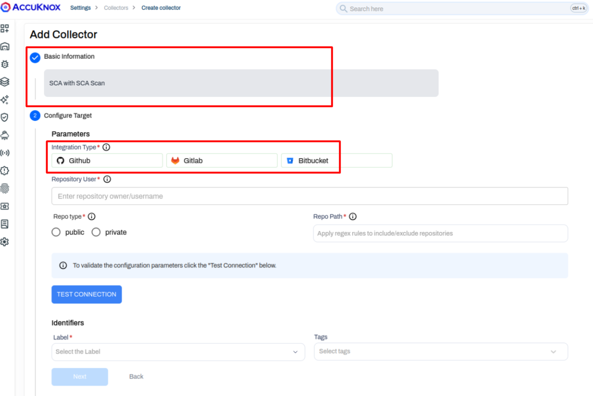
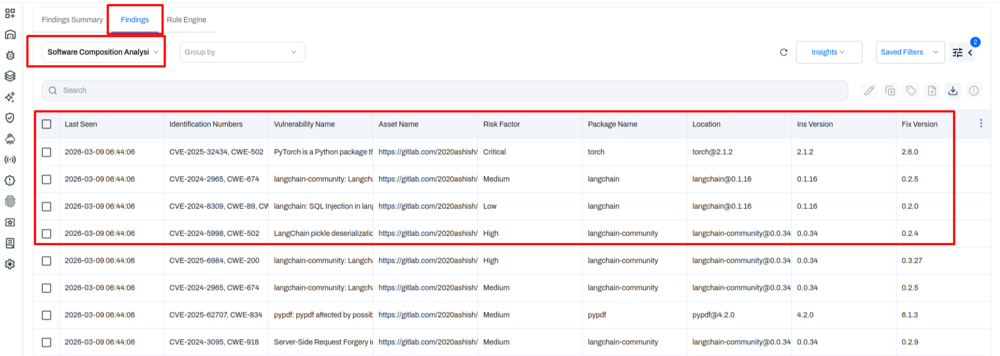
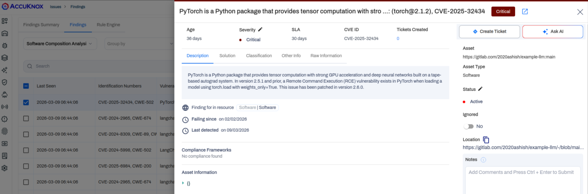

AccuKnox v3.4 Release Notes¶
Release Date: March 2026
AccuKnox v3.4 is a feature-rich release that strengthens the platform across cloud governance, application security, API protection, operational intelligence, workflow automation, and vulnerability prioritization.
{kind=link}
What's New at a Glance¶
{kind=link}
- Software Composition Analysis (SCA): Scan code repositories for vulnerable open-source dependencies via GitHub, GitLab, and Bitbucket connectors.
- SBOM CI/CD Pipeline Integration: Automate SBOM generation and upload via GitHub Actions — builds, scans, and pushes CycloneDX files per commit.
- Universal SARIF Parser: Ingest findings from any SARIF-compatible tool (Checkmarx, JFrog, GitLeaks, etc.) without custom parsers.
- Azure Organization Onboarding: Onboard entire Azure tenants, management groups, or subscriptions at scale with auto-discovery.
- AWS GovCloud Support: Onboard and scan AWS GovCloud regions for government and regulated workloads.
- RBI MD-ITF Compliance: New compliance framework mapping for Reserve Bank of India's Master Direction on IT Framework.
- Rate Limiting: Throttle API traffic at per-user/IP, global per-user/IP, and global service levels.
- API Spec Generation: Auto-generate OpenAPI spec files from observed production traffic.
- Agents Visibility Dashboard: Centralized repository to view agent inventory, risk severity, dependencies, and operational risks across major cloud environments.
- Prompt Firewall Application Dashboard: Monitor LLM usage, enforce prompt security policies, and detect prompt injection or data leakage attempts.
- AI Development Platform Visibility: Unified inventory and governance for agents created within AI development platforms, tracking connections to integrations and knowledge sources.
- Customizable Dashboards: Clone/rename widgets, apply widget-level filters, and clone entire dashboards. Views persist across sessions.
- Smart Export: Export findings and reports in multiple formats, including boardroom-ready Word documents (DOCX) with executive summaries, as well as CSV and other formats for flexible reporting.
- AI-Powered Rule Engine: Describe security rules in natural language and let AI populate conditions and actions automatically.
- SAST AI Analysis: Opt-in Anthropic-powered enrichment for SAST scan findings — false positive detection, severity assessment.
- Unified App Center: Single hub to manage all messaging, ticketing, and cloud security connectors with health monitoring.
- GitHub Ticketing: Create GitHub Issues directly from any finding, joining Jira and ServiceNow.
- Custom Jira Field Mapping & Simplified Templates: Zero-code mapping of AccuKnox findings to Jira custom fields, Mustache-based templates for metadata embedding, and automated ticket creation for critical/high findings.
- IBM QRadar: Forward security events to QRadar for centralized SIEM correlation.
- MCP Server: Expose AccuKnox data to AI assistants and LLM tools via Model Context Protocol.
- Custom Finding Statuses: Define transitional or non-transitional custom statuses beyond the built-in set.
- Group by Unique Vulnerability: Deduplicate cloud findings by collapsing variants into a single parent entry.
- Runtime Verified Vulnerability Prioritization: eBPF-powered telemetry flags vulnerabilities actually executing in production, reducing CVE noise and surfacing the most exploitable risks.
- Deleted Asset Lifecycle: Auto-resolve findings when the associated asset no longer appears in scan results.
- Expanded Event Trail: New audit categories — cluster connectivity, trigger management, report management, channel integrations.
- AWS WAF Scanning (RRA): Validate AWS WAF rules and STIG compliance on Ubuntu VMs via the Rapid Risk Assessment tool.
- Kubernetes Node Scanning: Scan node-level OS packages and host configurations beyond container images.
- Native Cloud Tags (Smart Tags): Auto-import asset tags from AWS and GCP; use them for filtering and Rule Engine automations.
- Seamless Tenant Switching: Preserve page and tab state when switching between tenants.
Cloud Security & Compliance¶
Azure Organization Onboarding¶
You can now onboard entire Azure environments at scale using Tenant, Management Group, and Subscription IDs. Flexible Include and Exclude modes let you fine-tune security coverage across complex organizational hierarchies.
The primary benefit is auto-discovery — any new subscription added to an onboarded Management Group is automatically scanned and protected by AccuKnox without requiring manual configuration.
See Onboarding Guide: Azure Organization Onboarding.
{kind=link}
RBI MD-ITF Compliance Framework¶
AccuKnox now includes the RBI Master Direction on Information Technology Framework (MD-ITF) as a supported compliance standard. You can enable this framework in the Compliance section and view your compliance posture against RBI-mandated controls directly from the compliance grid.
{kind=link}
Read Blog: AccuKnox Announces Support for RBI MD-ITF Compliance
AWS GovCloud Support¶
AccuKnox now supports onboarding and scanning of AWS GovCloud regions, extending coverage to government and regulated workloads that require data residency within GovCloud boundaries. We support us-gov-east-1 -> AWS GovCloud (US-East) and us-gov-west-1 -> AWS GovCloud (US-West)
Application Security¶
Software Composition Analysis (SCA)¶
AccuKnox introduces Software Composition Analysis to identify vulnerabilities in open-source dependencies across your code repositories. SCA connects to your repositories via GitHub, GitLab, and Bitbucket connectors and scans project dependencies for known CVEs.
Once a scan completes, findings appear under Issues → Findings with the Software Composition Analysis data type selected. Each finding includes:
- CVE / CWE identification numbers
- Vulnerability name and description
- Risk factor (Critical, High, Medium, Low)
- Affected package name and installed version
- Recommended fix version
- Asset location (repository URL)
This gives your team everything needed to prioritize and remediate dependency risks at a glance.
  
{kind=link}
{kind=link}
{kind=link}
SBOM CI/CD Pipeline Integration¶
Building on the SBOM comparison utility introduced in v3.3, AccuKnox now supports automated SBOM generation and upload via CI/CD pipelines. By adding the AccuKnox GitHub Actions workflow to your repository, every build automatically:
- Takes your Dockerfile as input and builds the container image.
- Scans it and generates an SBOM file (CycloneDX format).
- Pushes the SBOM to your AccuKnox project for tracking and comparison.
This enables continuous supply chain visibility without manual file uploads. You can compare SBOM versions over time and filter by added or removed packages.
{kind=link}
{kind=link}
See Detailed Docs: SBOM CI Workflow.
Universal SARIF Parser¶
AccuKnox now supports a unified SARIF ingestion engine that accepts findings from any security tool outputting the industry-standard SARIF (Static Analysis Results Interchange Format) schema. This includes tools like Checkmarx, JFrog, GitLeaks, and many others.
Instead of building custom parsers for each tool, you can now pipe SARIF output directly into AccuKnox. Ingested findings appear under Issues → Findings → SARIF Findings and follow the same lifecycle, tagging, and ticketing workflows as native findings.
See Detailed Docs: SARIF Findings.
{kind=link}
API Security¶
API Rate Limiting¶
AccuKnox now supports rate limiting policies for API endpoints, allowing you to throttle traffic and prevent abuse. Three levels of rate limiting are available:
- Per User / IP — Limit the number of requests a specific user or IP address can make to an endpoint within a time window.
- Per User / IP (Global) — Apply a global rate limit per user or IP across all endpoints.
- Global Service Limit — Set a blanket rate limit for an endpoint regardless of the source IP — e.g., "allow only 10 requests per minute to this endpoint from any source."
This helps protect backend services from abuse, brute-force attacks, and unexpected traffic spikes without requiring external gateway configuration.
API Spec Generation from Traffic¶
AccuKnox can now automatically generate OpenAPI specification files based on observed API traffic. By analyzing which endpoints are being hit and the request/response patterns, the platform constructs a spec file that documents your live API surface.
This works for both individual endpoints and API collections, giving teams a starting point for API documentation directly from production traffic data.
{kind=link}
AI Security¶
Agents Visibility Dashboard¶
The new Agents Visibility Dashboard gives security teams a centralized inventory and risk summary for AI agents deployed across multiple cloud environments. This helps monitor agent sprawl and apply consistent governance as AI automation grows.
Cross-Cloud Discovery — View all deployed agents across major cloud providers from a single interface, eliminating environment-specific blind spots.
Risk & Severity Insights — Agent-related findings are categorized by severity to help prioritize investigations.
Dependency Tracking — Visualize connections between agents, enterprise tools, and knowledge sources to identify access to sensitive systems.
Operational Risk Prioritization — Quickly spot agents generating the most risk signals for faster response times.
{kind=link}
Prompt Firewall Application Dashboard¶
Gain operational visibility into how applications interact with Large Language Models (LLMs) and ensure prompt security policies are correctly enforced. This enables security teams to detect and control unsafe LLM interactions in production.
LLM Usage Monitoring — Track the total volume of prompts sent by applications to language models.
App Protection Coverage — Quickly verify which AI applications are protected by active prompt firewall policies.
Prompt Policy Evaluation — View queries classified as allowed, monitored, or blocked based on your configured rules.
Violation Trends — Monitor spikes in prompt misuse, such as prompt injection or data leakage attempts.
Prompt vs. Response Analysis — Analyze both inputs to the model and the model's generated outputs.
{kind=link}
Agent Visibility Across AI Development Platforms¶
AccuKnox extends governability directly into the source by providing inventory and visibility for agents created within internal or third-party AI development platforms.
Unified Inventory — Centralized tracking of agents across various development platforms.
Metadata Visibility — Detailed insights into agent configuration status and associated cloud resources.
Integration Awareness — Trace relationships showing exactly which tools and knowledge sources an agent is connected to.
Governance & Auditing — Built-in filtering and discovery to support continuous security audits and compliance workflows.
{kind=link}
Dashboards & Reporting¶
Customizable Dashboards¶
The dashboard experience has been completely redesigned, replacing the previous default-only dashboard with a fully customizable interface. Key capabilities include:
- Edit Dashboards — Modify the layout and composition of any dashboard.
- Rename Widgets Inline — Click on any widget title to rename it directly on the dashboard — for example, rename a generic "Cloud Findings" widget to "AWS Production Findings."
- Clone Widgets — Duplicate a widget and apply different filters to compare data side-by-side (e.g., the same "Cloud Findings" widget for two different AWS accounts).
- Widget-Level Filtering — Apply independent filters to individual widgets, beyond just the global time/date range. Earlier, only global filters were available; now each widget can have its own filter context.
- Clone Dashboards — Duplicate an entire dashboard configuration to create variants for different teams or use cases.
- Persistent Views — All customizations (filters, names, layout) persist across sessions, so your most important data is always ready when you log in.
Note
Widget-level filtering is available for select widgets and will expand to more widgets in future updates.
Smart Export¶
AccuKnox now supports Smart Export for findings and reports. You can export data in multiple formats:
- Microsoft Word (.docx) — Boardroom-ready reports with executive summaries and severity breakdowns.
- CSV — Raw data for further analysis or integration with other tools.
- Other formats — Flexible options to suit your reporting and compliance needs.
This makes it easy to communicate risks to both technical and non-technical stakeholders, and to integrate AccuKnox data into your existing workflows.
Intelligent Automation & AI¶
AI-Powered Rule Engine¶
The Rule Engine now includes an AI assistant that lets you describe security rules in natural language. For example, typing:
"Create a ticket for cloud findings with critical severity"
…will automatically populate the rule's name, description, conditions, and actions. This dramatically reduces the time required to deploy security automation and makes the Rule Engine accessible to users who are not familiar with the manual form-based configuration.
The AI assistant is opt-in — a toggle allows you to switch between AI-assisted and manual rule creation at any time.
Note
This is a Phase 1 release of the AI Rule Engine. Coverage will expand in future updates.
{kind=link}
SAST AI-Powered Findings Analysis¶
For SAST scans, you can now opt into AI-enhanced findings analysis powered by Anthropic. After a scan completes, the AI reviews each finding and provides:
- False positive identification.
- Severity and criticality assessments.
- Actionable summaries explaining the real-world impact of each finding.
To use this feature, provide your Anthropic API key in the SAST scan configuration. The AI analysis is entirely opt-in and runs as a post-scan enrichment step.
Integrations¶
Unified App Center¶
The Integrations page has been completely redesigned into a unified App Center. All connectors — Messaging (Slack, Teams), Ticketing (Jira, ServiceNow, GitHub), Cloud Security, and DevSecOps — are now organized by category on a single page.
A dedicated "Connected" tab lets you monitor the health of all active integrations at a glance and quickly identify inactive or failing connectors. Categories include Messaging, Ticketing, Cloud Security, and DevSecOps — everything consolidated on a single page instead of scattered across multiple settings screens.
{kind=link}
Custom Jira Field Mapping & Simplified Templates¶
AccuKnox now offers zero-code integration for mapping security findings to Jira custom fields. Using Mustache-based ticket templates, asset metadata (such as asset type) is embedded directly into ticket descriptions. Jira automation rules can parse these descriptions and populate structured fields, enabling native filtering and JQL queries.
- The AccuKnox Rules Engine can auto-create tickets for Critical and High findings as soon as they are discovered.
- Security teams can build separate workstreams in Jira based on asset types (Containers, Clusters, Cloud Accounts).
- Flexible filtering and workflow automation streamline remediation and reporting.
GitHub Ticketing¶
AccuKnox now supports GitHub Issues as a ticketing connector, joining Jira and ServiceNow. You can:
- Configure a GitHub repository as a ticketing destination in the App Center.
- From any finding (cloud, SCA, DAST, or otherwise), create a GitHub Issue with a single click.
- The issue is automatically populated with finding details and linked to the configured repository.
This is especially useful for development teams that manage their workflows entirely within GitHub.
{kind=link}
IBM QRadar Integration¶
AccuKnox can now forward security events and findings to IBM QRadar for centralized SIEM correlation and incident management. Once configured, findings flow from AccuKnox into your QRadar instance in real time.
See Detailed Docs: IBM QRadar Integration.
{kind=link}
MCP Server¶
AccuKnox now exposes an MCP (Model Context Protocol) Server, enabling AI assistants and LLM-based tools to interact with your AccuKnox environment programmatically. This allows teams to query findings, trigger actions, and retrieve security posture data through MCP-compatible clients.
See Detailed Docs: MCP Server.
Findings & Vulnerability Management¶
Custom Finding Statuses¶
You can now define custom finding statuses beyond the built-in set (Active, Fixed, Exception Granted, etc.). Custom statuses are created through the administration panel and are available across all finding types.
Each custom status can be marked as:
- Transitional — The status participates in the standard findings lifecycle (a subsequent scan can move it to "Fixed" or "Active" automatically).
- Non-Transitional — The status is sticky and does not change based on scan results, useful for manual review workflows.
Info
On SaaS environments, contact your AccuKnox representative to configure custom statuses. On-premises customers have direct access through the admin panel.
Runtime Verified Vulnerability Prioritization¶
AccuKnox now flags vulnerabilities that are actually executing in production using a Runtime Verified flag. Powered by eBPF telemetry (via KubeArmor and patented in-kernel aggregation), this feature reduces CVE noise by up to 100x and provides auditable proof of activity, such as identifying the specific library or process (e.g., OpenSSL or Vault) invoked at runtime.
- Advanced enrichment correlates runtime data with CISA KEV, EPSS scores, and GitHub PoC links to surface the most exploitable risks.
- Unified control plane scales deep visibility across Kubernetes clusters and VMs with a single Helm command for streamlined remediation.
Group by Unique Vulnerability Name¶
A new "Unique Vulnerability Name" grouping option is now available for cloud findings. Previously, grouping by vulnerability name would produce duplicate entries — for example, "Access key not rotated for 30 days," "Access key not rotated for 60 days," etc., even though the underlying issue is identical.
With the new grouping, these findings collapse into a single parent entry (e.g., "Access key not rotated"), with all affected assets and their individual age variants listed underneath. This provides a cleaner, deduplicated view that helps teams focus on distinct issues rather than sifting through repetitive variants.
Info
This grouping option is currently available for cloud findings only. Other data types do not typically produce duplicate vulnerability names.
{kind=link}
Findings Lifecycle: Deleted Asset Handling¶
The findings lifecycle now accounts for deleted assets. Previously, if an asset was removed from your environment, its associated findings would remain permanently active with no automatic resolution.
Starting with v3.4:
- If an asset no longer appears in consecutive scan results, its findings are moved to "Waiting for Verification".
- If the asset remains absent in the following scan, findings are automatically marked as "Fixed".
This ensures your findings view stays accurate and reflects the true state of your environment without manual cleanup.
Audit & Observability¶
Expanded System Event Trail¶
The Event Trail (audit log) has been extended with new categories, providing deeper visibility into platform operations:
| Category | What It Tracks |
|---|---|
| Cluster Management | Cluster onboarding, connect/disconnect events, last heartbeat timestamps |
| Trigger Management | Changes to automated triggers and rule configurations |
| Report Management | Report generation successes, failures, and modifications |
| Channel Integration | Integration connection and disconnection events |
These join the existing User Management and Vulnerability Management categories. You can also create automated triggers on these events — for example, send a Jira ticket or email alert the moment a production cluster disconnects.
See Detailed Docs: Audit Trail Logs (EventTrail).
{kind=link}
{kind=link}
Infrastructure & Platform¶
AWS WAF Scanning via Rapid Risk Assessment (RRA)¶
The Rapid Risk Assessment (RRA) tool (formerly RAT) now includes AWS WAF rule validation. When executed against an AWS account, RRA checks for the presence of defined WAF rules and creates findings for any missing or misconfigured rules — for example, "Signal automated browser must be configured with block action."
RRA also supports STIG-based vulnerability scanning on Ubuntu VMs (18.04 and 22.04), providing host-level compliance checks.
{kind=link}
{kind=link}
Kubernetes Node Scanning¶
AccuKnox now scans Kubernetes nodes directly by leveraging host-file system mounting. Deployed via a Helm command, this extends vulnerability scanning beyond container images to the underlying node infrastructure, covering OS packages and host-level configurations.
Miscellaneous Improvements¶
- Native Cloud Tags (Smart Tags) — Asset tags from AWS and GCP are now automatically imported and synced into AccuKnox. You can filter assets and findings by native cloud tags using "contains" logic, and leverage these tags in Rule Engine automations. Tags refresh with every scan to stay in sync with your live environment.
- Seamless Tenant Switching — Switching between tenants now preserves your current page and tab state. If you switch tenants while on the Alerts page, you remain on Alerts with the new tenant's data instead of being redirected to the dashboard.
Takeaways¶
AccuKnox v3.4 brings major additions to application security coverage with SCA and SARIF support, gives security teams powerful dashboard customization through Dashboard V3, and deepens cloud governance with Azure organization-level onboarding and expanded compliance frameworks. Combined with the AI-powered Rule Engine, GitHub Ticketing, and enhanced findings lifecycle management, this release equips teams to move faster, automate more, and maintain a precise view of their security posture.
These updates are now live and available in your AccuKnox dashboard.
For questions or support, contact us at support@accuknox.com.